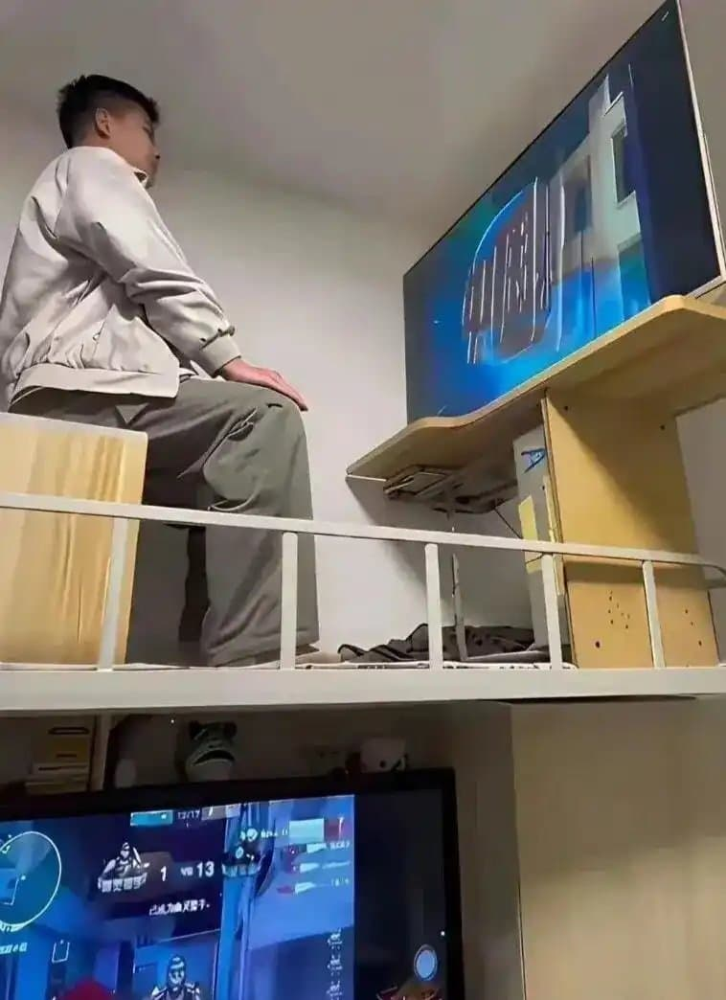
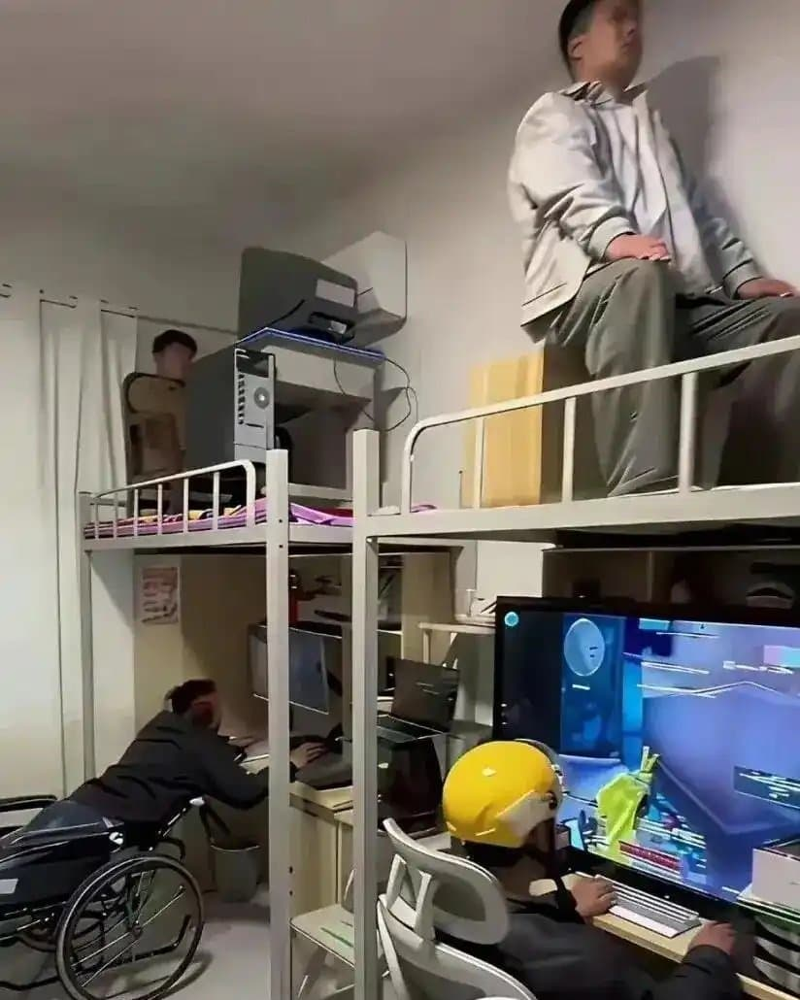

와 2층에 저 모니터 CRT임? 구하기도 힘들겠다.
CRT가 FPS할때 좋다고 유행인적 있긴했는데 ㅋㅋㅋㅋ
아직도있네
지금은 큰 문제안될거임 lcd모니터 주사율 144넘어가면서 부터는 이제 crt랑 차이가 현저히 좁아져서 ㅋㅋㅋㅋ
옛날엔 CRT가 존나 중요하긴했지 주사율을 올릴수있었으니 ㅇㅇ
서든할때 시야각 넓어서 crt쓰는거아녓음?
어차피 게임자체 해상도가 4:3만 지원하는데 시야각이 뭔상관임 원래 주사율때문에 쓰는거였음 ㅇㅇ
요샌 16:9도 지원하나? 원래는 4:3만 지원했음 800x600 1024x768 같은거 ㅇㅇ
서든이 전성기시절엔 lcd모니터가 주사율이 잘나와봐야 75hz가 맥시멈이던 시절임 ㅇㅇ...
평균적으론 60hz였고 crt는 주사율해제하면 240까지도 상관없었으니까 애초에 반응속도 훨씬 좋고 + 프레임병목이없음
일병, 이등병,
병장, 상병
뭔 ai 같냐
복층이네 잠은 어디서 자
저게 원래 위아래가 1인용임..아래책상 위에 침대 사진찍으려고 일부러저런거같음
와중에 저 휠체어 굉장히 신경쓰여
정성들여 찍은 컨셉샷 혹은 ai인듯
디바 중국인이었네
장난치려고 찍은 게 아닐까?
그런 것 같은데 ㅋㅋㅋ 유쾌
그래도 휠체어 1층줬네
여름에 한놈은 존나춥겄다ㅋㅋㅋㅋㅋㅋ
헬멧은 왜 쓴거지
위에서 떨어지면 대가리 깨질까봐 보호용
헤드샷은 막아야지
휠체어랑 헬멧은 뭐냐 ㅋㅋ
오~ 듀오백
2층에 쓰던애들이 떨어지면 1층처럼 되는거지?
왜 메이퇀 헬멧쓰고 있냐 ㅋㅋㅋ
달배부업인듯 ㅋㅋㅋㅋ ㅛㅂ
AI맞는듯 2층 데탑에 파워도 없고 케이블도 연결 안되어있네
이것은 내가 걷기 시작하는 이야기다
하중은 잘 버텨주려나...?? ㄷㄷ
AI 맞잖아? 딱 봤을때부터 기괴한 위화감부터 들더니
자세히 보니 디테일이 다 뭉개져 있네
아랫짤 본체랑 커튼 보고 확신함
정좌로 앉아있는거때메 ai 티나는게 존나웃김 ㅋㅋㅋㅋㅋ
거를타선이 없네 ㅋㅋ
백룸 같냐 ㅋㅋ